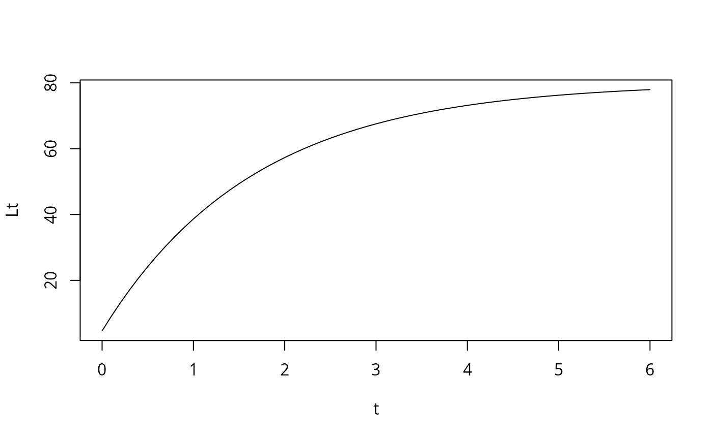
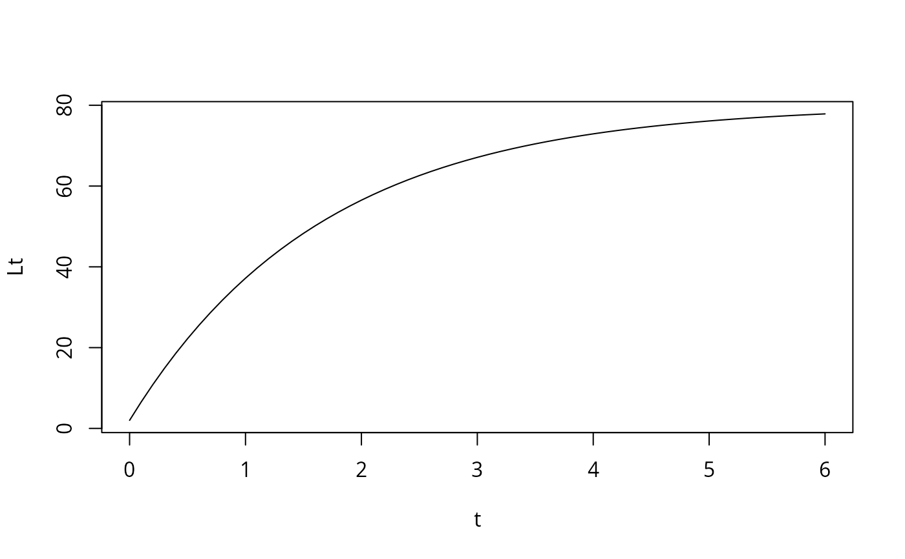
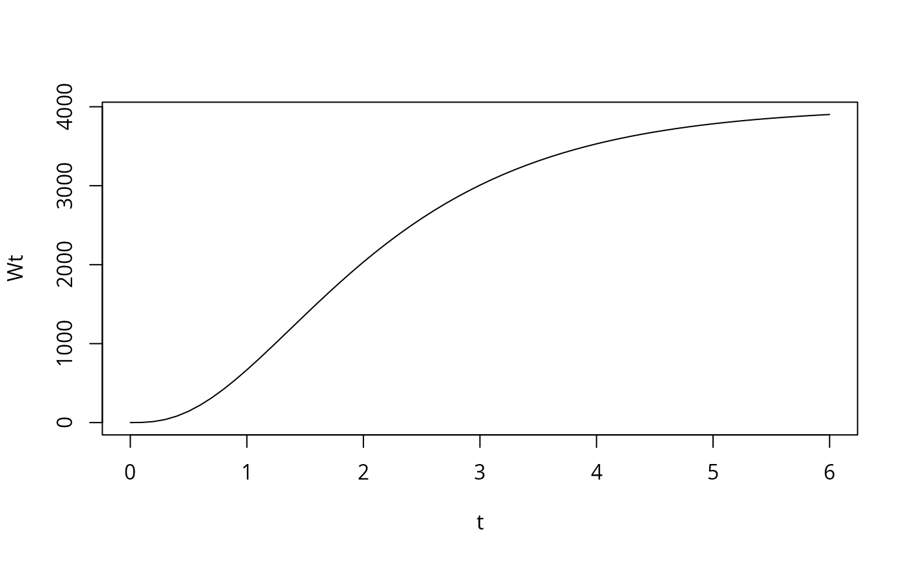
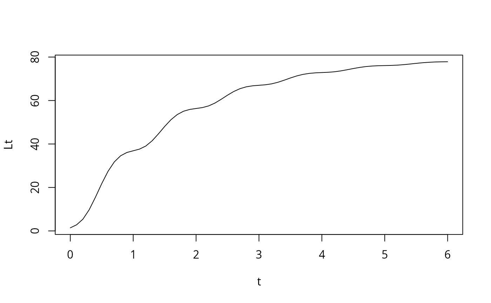
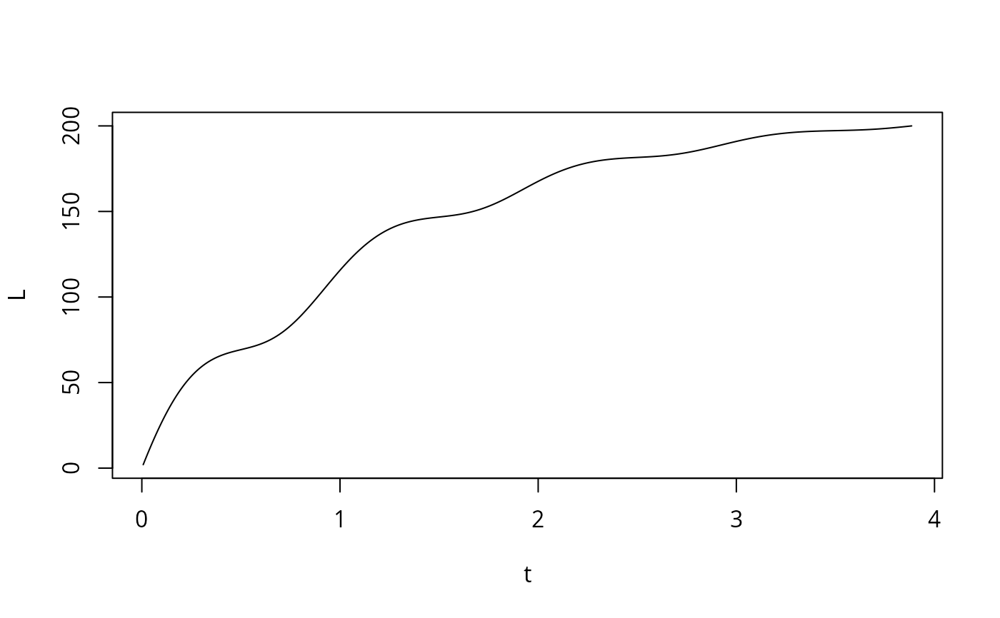

This function applies the von Bertalanffy growth function (VBGF). It allows to calculate ages from lengths or lengths from ages based on the special, generalised or seasonalised VBGF.
Arguments
- param
a list with following potential objects:
Linf: infinite length for investigated species in cm, orWinf: infinite weight for investigated species in grammK: growth coefficent for investigated species per yeart0: theoretical time zero, at which individuals of this species hatch (default: 0)b: exponent of weight length relationship (default: 3)D: surface factor (default: 1)L0: length at hatching for VBGF with L0ts: onset of the first oscillation relative to t0C: intensity of (sinusoid) growth oscillations. Default is no oscillation (C = 0)
- t
ages for which to calculate corresponding lengths, or
- L
lengths for which to calculate corresponding ages
- na.rm
logical; should NA in input length or age vector be omitted? (default: FALSE)
Details
Based upon which input parameters are given one of the following VBGF types is applied: "special", "generalised", or "seasonalised" VBGF.
References
Somers, I. F. (1988). On a seasonally oscillating growth function. Fishbyte, 6(1), 8-11
Sparre, P., Venema, S.C., 1998. Introduction to tropical fish stock assessment. Part 1. Manual. FAO Fisheries Technical Paper, (306.1, Rev. 2). 407 p.
Examples
# calculation of lengths
# with t0
t <- seq(0,6,0.1)
Lt <- VBGF(list(Linf=80, K=0.6, t0=-0.1),t=t)
plot(t, Lt, t="l")

# with L0
t <- seq(0,6,0.1)
Lt <- VBGF(list(Linf=80, K=0.6, L0=2),t=t)
plot(t, Lt, t="l")

# with Winf
t <- seq(0,6,0.1)
Wt <- VBGF(list(Winf=4000, K=0.8), t=t)
plot(t, Wt, t="l")

# seasonalised VBGF
t <- seq(0,6,0.1)
Lt <- VBGF(list(Linf=80, K=0.6, t0=-0.1, ts=0.5, C=0.75),t=t)
plot(t, Lt, t="l")

# calculation of ages
L <- seq(2,200,0.1)
t <- VBGF(L = L, list(Linf=210, K=0.8, C= 0.75))
plot(t, L, t="l")
